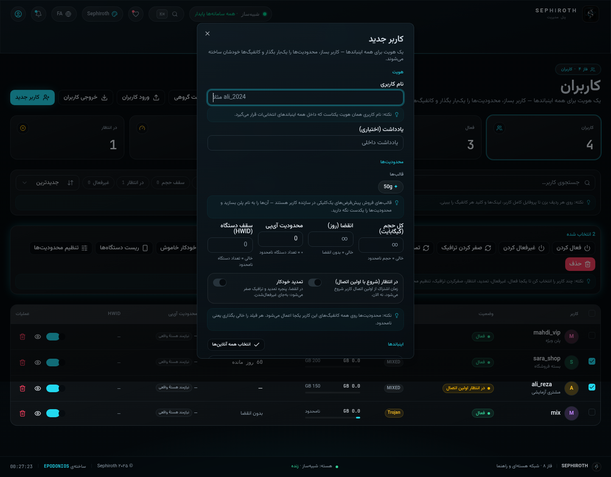
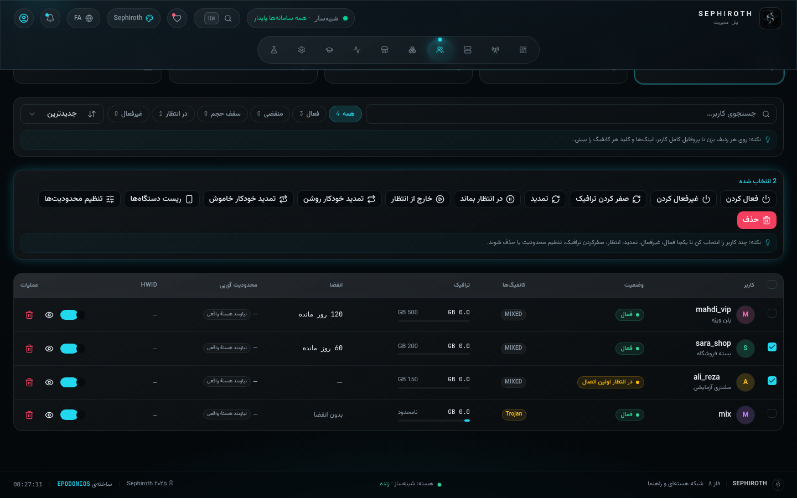

این کتاب برای توئه که تا حالا با پنل مدیریت VPN کار نکردی، از کلمههایی مثل «اینباند» و «اشتراک» نمیترسی ولی معناشون رو هم نمیدونی، و میخوای از صفرِ صفر یاد بگیری همهی دکمهها و فیچرهای پنل Sephiroth چیکار میکنن. بدون اصطلاحات سنگین، بدون فرضِ قبلی — مثل اینکه یه دوست باحال داره برایت توضیح میده.
هر دکمه، هر فیلد، هر گزینهمثال و تشبیههای سادهقدمبهقدم با اسکرینشات واقعیفارسی خودمونی
EPODONIOS · SEPHIROTH PANEL · 2026
فهرست
تو این کتاب چی پیدا میکنی؟
۰۱
قبل از شروع — این پنل اصلاً چیه؟
۳
۰۲
واژهنامه خودمونی (۶ تا کلمه که باید بدونی)
۴
۰۳
ورود به پنل — و اگه رمزت یادت رفت؟
۵
۰۴
داشبورد — اتاق فرمان تو
۶
۰۵
نوار بالا: تمها، زبانها، زنگوله و Ctrl+K
۷
۰۶
کانفیگها (اینباندها) — تور سریع
۸
۰۷
ساخت سریع: اولین کانفیگت در ۳۰ ثانیه
۹
۰۸
کدوم پروتکل برای کی؟ (به زبان آدمیزاد)
۱۰
۰۹
فورج قدمبهقدم — هر فیلد یعنی چی
۱۱
۱۰
دو دکمهی جادویی: تشخیص IP و پورت آزاد
۱۲
۱۱
بعد از ساخت: کارت کانفیگ و لینکها
۱۳
۱۲
اتوپایلوت — چند کانفیگ با یک کلیک
۱۴
۱۳
امنزیاWG خودمونی
۱۵
۱۴
ساختن کاربر — هر فیلدش رو با هم میریم
۱۶
۱۵
جدول کاربرها — چیپها یعنی چی
۱۷
۱۶
کشوی کاربر: لینک، تمدید، دستگاهها
۱۸
۱۷
عملیات گروهی — ۱۱ دکمه برای کارهای دستهجمعی
۱۹
۱۸
«در انتظار» و «تمدید خودکار» — با قصهی مشتری
۲۰
۱۹
صفحهی اشتراک (/sub) — کاربرت چی میبینه؟
۲۱
۲۰
گروههای ساب + نمایندهها و قالبهای فروش
۲۲
۲۱
هاستها، نودها، خروجیها و روتینگ — خلاصهی مفید
۲۳
۲۲
فعالیتها و زنگوله — دوربین مداربستهت
۲۴
۲۳
ربات تلگرام — دستیار فروش و نگهبان
۲۵
۲۴
تنظیمات — همهچیز در دو تب
۲۶
۲۵
پروفایل، دکتر پیکربندی و API (برای کنجکاوها)
۲۷
۲۶
مشکلات رایج + چکلیست روز اول
۲۸
✓ چطور بخونم؟
به ترتیب بخون؛ اگه عجله داری فصلهای ۱ تا ۵ و ۱۴ تا ۱۹ کارت رو میندازن. دکمهها تو قاب آبی (مثل این) نشون داده شدن.
سپیروت از صفر تا صد · v2.6.0۰۲EPODONIOS
فصل ۰۱
۰۱قبل از شروع — این پنل اصلاً چیه؟
بذار از ته ماجرا شروع کنیم. تو یه سرور داری (یه کامپیوتر روشن که یه جایی تو دنیا به اینترنت وصله). این سرور میتونه برای مردم اینترنت آزاد بفروشه: مردم با یه اپ تو گوشیشون وصل میشن به سرورت و ترافیکشون از اونجا رد میشه. به این کل ماجرا میگن VPN یا به قول خودمون «کافیشاپِ اینترنت».
☕ یه تشبیه ساده
سرور تو = یه دکهی فروش. کانفیگ = راهِ ورود به دکه (در + کلید). کاربر = مشتریای که یه کارت عضویت داره. اشتراک = همون کارت عضویت که روی گوشی مشتری هست و میگه چقدر اعتبار داره. و پنل Sephiroth = خودِ تو، پشت پیشخوان: اونجا کارت صادر میکنی، درهای جدید باز میکنی و میبینی کی مصرف کرده و کی باید تمدید کنه.
پس پنل یه سایت مدیریته که روی همون سرورت بالا میاد. با مرورگر بازش میکنی، یه رمز میزنی، و همهچیز رو با کلیک مدیریت میکنی — بدون حتی یک خط کد. چیزی که این پنل رو خاص میکنه:
سادهای که حرفهای هم هست
از «ساخت سریع با یک کلیک» تا تنظیمات ریزِ REALITY و AmneziaWG — تازهکار راحت شروع میکنه، حرفهای هم به سقف نمیخوره.
فارسی و ۵ زبان دیگه
کل پنل فارسیِ درستوحسابی با چیدمان راستبهچپه — انگلیسی، عربی، چینی، ترکی و روسی هم داره.
زنده مثل مانیتور بیمارستان
CPU، رم، ترافیک و اتصالها لحظهای آپدیت میشن؛ لازم نیست صفحه رو رفرش کنی.
همهچیز در یک پورت
پنل، لینکهای اشتراک و API همه از یک آدرس سرو میشن — نه دیتابیس جانبی میخواد نه نرمافزار اضافه.
؟ آیا باید لینوکس بلد باشم؟
برای کار روزمره با پنل: نه، اصلاً. فقط برای «نصب اولیه روی سرور» از یه خط دستور استفاده میکنی که توی فصل آخر عیناً کپی میکنی — دیگه تمام کارها از داخل همین مرورگره.
؟ اگه فقط بخوام امتحانش کنم چی؟
پنل یه حالت شبیهساز داره (پیشفرض): بدون هیچ نصب اضافهای، همهی صفحهها رو با دادههای نمایشی نشون میده — پس میتونی خیالت راحت همهجا رو بزنی و بگردی، هیچی خراب نمیشه.
سپیروت از صفر تا صد · v2.6.0۰۳EPODONIOS
فصل ۰۲
۰۲واژهنامه خودمونی
قبل از اینکه بریم تو، ۶ تا کلمه رو با هم درست کنیم — همین ۶ تا کافیه که ۹۰٪ پنل رو بفهمی:
کلمه
یعنی چی؟ (خودمونی)
اینباند (Inbound / کانفیگ)
یکی از «درهای» سرورت. هر در یه پورت داره (مثل شماره واحد ساختمون) و یه روش ورود مشخص (پروتکل). مردم از همین درها وصل میشن. تو پنل اسمش «کانفیگها»ست.
یه کارت عضویت واقعی: اسم داره، سقف گیگ داره، تاریخ انقضا داره و میتونه به چندین کانفیگ وصل بشه. هر بار که بخوای به کسی سرویس بدی، یه کاربر میسازی.
لینک اشتراک (Subscription Link)
یه لینک شخصی برای هر کاربر (/sub/xxxx). مشتری این لینک رو میذاره توی اپ گوشیش و اپ خودش همهچیز رو میکشه و آپدیت میکنه — دیگه لازم نیست کانفیگها رو یکییکی کپی کنه.
ترافیک (Traffic)
حجم مصرفی، با گیگابایت حساب میشه. هر کاربر یه سقف داره؛ رسیدن به سقف = «تمامحجم» تا تمدید یا ریست بشه.
هسته (Core / Xray)
موتور واقعی که پشت صحنه کار میکنه و ترافیک رو جابهجا میکنه. پنل دستیارشه: کانفیگها رو بهش میده و اون اجراشون میکنه. حالت شبیهساز یعنی موتور نمایشی برای تمرین.
چند تا اصطلاح دیگه که جلوتر کمکم میبینیشون:
TLS و REALITY
راههای استتار ترافیک — TLS مثل رفتن با لباس رسمی به مهمانیه؛ REALITY هم میره و کارتِ شناسایی یه سایت واقعی دیگه رو نشون میده تا هیچکس نفهمه داری چیکار میکنی.
نود (Node)
یه سرور دوم که از دستورات پنل اطاعت میکنه — انگار شعبهی دوم دکهات.
ریسلر (Reseller)
فروشندهی زیرمجموعهات: با یوزر خودش وارد پنل میشه ولی فقط کاربرهای خودش رو میبینه و تا سقفی که تو تعیین کردی میتونه بفروشه.
HWID
اثر انگشتِ دستگاه. با «سقف دستگاه» مشخص میکنی هر اشتراک روی چند گوشی/کامپیوتر همزمان کار کنه.
؟ این چرا اینقدر سادهست؟
چون لازم نیست بیشتر بدونی! هر مفهوم پیچیدهتر (مثل REALITY یا روتینگ) سر جاش، توی همون فصل، همونجا که لازمش داری توضیح داده میشه.
سپیروت از صفر تا صد · v2.6.0۰۴EPODONIOS
فصل ۰۳
۰۳ورود به پنل — و اگه رمزت یادت رفت؟
آدرس پنل معمولاً شبیه http://IP-سرور:پورت است که موقع نصب داده شده. بازش کن:
شکل ۱صفحهی ورود — اسم کاربری، رمز، چشمک برای نمایش رمز و «۳۰ روز مرا به خاطر بسپار».
۱
نام کاربری و رمز رو بزن (موقع نصب ساخته شده؛ در پیشنمایش دکمهی پرکردن خودکار هست).
۲
اگه با کامپیوتر شخصی خودتی، تیکِ «۳۰ روز مرا به خاطر بسپار» رو نگه دار تا هر بار رمز نزنی.
۳
ورود بزن. تمام — رسیدی تو اتاق فرمان.
⚠ پنج بار اشتباه = قفل موقت
۵ بار رمز اشتباه = قفل شدن آیپی برای چند دقیقه با شمارش معکوس. عصبانی نشو — این نگهبانِ ضد هکرهاست. چند دقیقه صبر کن و دوباره تلاش کن.
اگه 2FA فعال باشه
بعد از رمز یه کادر ۶ رقمی میپرسه: کد جاری اپ احرازکننده (Google Authenticator و مشابه) رو بزن و وارد شو — این کد هر ۳۰ ثانیه عوض میشه، طبیعیه.
اگه رمزت یادت رفت
روی فراموش کردی؟ بزن. حالت بازیابی باز میشه و ازت کلید بازیابی میخواد — یه رشتهی شبیه SEPH-XXXX-XXXX-XXXX که موقع نصب یا توی «پروفایل» یه بار نشونت داده شده. کلید + رمز جدید بده و دوباره وارد شو. پس همین امروز این کلید رو یه جای امن (دفترچه یا پسوردمنیجر) ذخیره کن، واقعاً مهمه.
✓ توصیهی روز اول
همین اولین ورود، برو «پروفایل → امنیت» و رمز پیشفرض رو عوض کن و کلید بازیابی رو جایی امن نگه دار. دو دقیقه کار داره و خیالت برای همیشه راحته.
سپیروت از صفر تا صد · v2.6.0۰۵EPODONIOS
فصل ۰۴
۰۴داشبورد — اتاق فرمان تو
بعد از ورود، اولین چیزی که میبینی داشبورده. ممکنه اولش شلوغ به نظر بیاد — نگران نباش، بذار با هم هر تیکه رو بخونیم. قاعدهی کلی: داشبورد فقط نشون میده، اکثرش دکمهی خرابکننده نداره؛ پس با خیال راحت نگاهش کن.
ردیف اول — سلام و آمار حیاتی
کارایی: چهار تا نوار (پردازنده، حافظه، دیسک، شبکه) — مثل تب جعبهابزار تسکمنیجر گوشی. اگه نزدیک ۱۰۰٪ شدن یعنی سرور داره نفس تنگ میکشه. کل کاربران / همین حالا / ترافیک ۳۰ روز: چند کارت عضویت داری، چند نفرشون همین لحظه وصله و این ماه چقدر جابهجا شده.
چارت «فرکانس ترافیک»
خط رنگی = مصرف سرور در طول زمان؛ 30D7D24H زوماند. حباب «اوج» پرترافیکترین لحظهست.
خلاصه و هشدارها
«نودهای آنلاین» یعنی چند تا از درهات فعاله. «هشدارهای فعال» دوتا چیز مهم رو گوشزد میکنه: کاربرهایی که دارن به سقف حجمشون میرسن و کاربرهایی که دارن منقضی میشن — همینجاست که میفهمی کی باید زنگ بزنی و بگی «تمدید کن رفیق».
رادار تمدید و هدف ماهانه
«رادار تمدید» سه نفرِ نزدیک به انقضا رو با روزهای باقیمونده نشون میده (بازبینی کن میبرتت سراغشون). «هدف ماهانه» گِیج فروشه.
کارت «سلام، فرمانده» — میانبرهای کارهای روزانه
کاربر جدید → میبرتت به ساختن کاربر (فصل ۱۴).
کانفیگ جدید → میبرتت به ساختن کانفیگ (فصل ۹).
بکاپ فوری → دانلود فایلِ کل دادههای پنلت. هر هفته بزنش و جای امن نگه دار — نجاتدهندهی روز مبادا.
ربات تلگرام → میبرتت به تنظیمات ربات (فصل ۲۳).
«فعالیت زنده» — استریم لحظهای
پایین داشبورد یه فید زنده هست: «فلانی متصل شد»، «ورود مدیر از …»، «هسته بازنشانی شد» و… فیلتر هشدارها فقط موارد مهم رو نگه میداره — فصل ۲۲ کاملترش میگه.
؟ اعداد شبیهساز واقعیان؟
اگه هنوز روی درایور «شبیهساز» باشی، ترافیک و اتصالها نمایشیان (برای تمرین و آشنایی). وقتی روی سرور واقعی درایور «Xray واقعی» رو فعال کنی (فصل ۲۴)، همهی اعداد واقعی میشن. جایی هم که واقعی/نمایشی بودن مهم باشه، خود پنل با چیپ «شبیهساز» بالای صفحه یادت میندازه.
سپیروت از صفر تا صد · v2.6.0۰۶EPODONIOS
فصل ۰۵
۰۵نوار بالا: تمها، زبانها، زنگوله و Ctrl+K
قبل از رفتن جلوتر، همون نوار همیشهبالای صفحه رو بشناس — چون تمام کارهات از همینجا شروع میشه (از راست به چپ تو حالت فارسی):
لوگوی Sephiroth: هر جا گم شدی، روی این بزن تا برگرادی داشبورد.
جستجو یا پرش سریعCtrl+K: محبوبترین دکمهی کل پنل. بزنش و اسم هر صفحهای رو تایپ کن — مثلاً «کاربران» — و اینتر. مثل تلهپورت عمل میکنه؛ حتی روی موبایل با دکمهی ذرهبین.
قلب (حمایت از Sephiroth): صفحهی حمایت — آدرس کیف پول تتر، لینک رایمیت و ستارهی گیتهاب. اگه پنل به دردت خورد، یه ستاره بده؛ سازنده خوشحال میشه :)
Theme Engine: ۶ تا تم رنگی (کازمیک سایان، بنفش، کریمسون، ماتریکس، طلایی OLED و…) — هر کدوم رو خواستی بزن؛ فقط شکل و ظاهره، هیچ چیز دیگهای عوض نمیشه.
زبان: منوی ۶ زبانه — فارسی، انگلیسی، عربی، چینی، ترکی، روسی. عربی و فارسی خودکار راستبهچپ میشن.
زنگوله (اعلانها): آخرین رویدادهای پنل رو نشون میده (فصل ۲۲).
آواتار/پروفایل: نام نمایشی، «تنظیمات حساب» و خروج از این منو.
ردیف دوم — ناوبری مداری
زیر نوار بالا، یه ردیف دکمهی گرد هست: داشبوردکانفیگهانودهاکاربرانگروههای سابنمایندههافعالیتهاراهنماتنظیماتآزمایشگاه — اینها صفحات اصلیان و ترتیب فصلهای این کتاب هم دقیقاً همینه. توی «تنظیمات» میتونی بعضی از این دکمهها (مثل نودها) رو خاموش کنی تا نوارت خلوتتر بشه.
؟ «راهنما» همون این کتابه؟
جالبه: داخل خود پنل هم یه «کتابچه میدانی» هست (دکمهی راهنما) که برای هر صفحه، جدول «فیلد = یعنی چی = چی وارد کنم» و قدمبهقدم داره — به ۶ زبان. این کتاب، نسخهی مفصلتر و خودمونیترِ همون درسهاست؛ دوتاش رو همزمان میتونی داشته باشی.
سپیروت از صفر تا صد · v2.6.0۰۷EPODONIOS
فصل ۰۶
۰۶کانفیگها (اینباندها) — تور سریع
روی کانفیگها بزن. این صفحه «انبار درهای سرورت» است. بالای صفحه چهار دکمه اصلی میبینی:
صحتسنج کانفیگ
دکتر پیکربندی — یه معاینهی کامل از کل تنظیماتت میگیره و مشکلات رو با راهحل نشون میده (فصل ۲۵).
ساخت سریع
برای عجلهایها: پروتکل رو انتخاب کن، «همین حالا بساز» — بقیهش با پنل. (فصل ۷)
اتوپایلوت
ناوگانساز: چندین کانفیگ با هم، خودکار. (فصل ۱۲)
کانفیگ جدید
فورج کامل — همهی تنظیمات ریز و درشت دست خودت. (فصل ۹)
زیرش یه نوار آمار (چند کانفیگ داری / چند تا آنلاین / چند کاربر وصله / کل ترافیک) و یه ردیف ابزار میبینی: جستجوی تگ (اسم کانفیگها رو بگرد)، فیلترهای همهآنلاینتعمیراتغیرفعال و دکمهی عوضکردن نمای کارتها ↔ جدول. هر کدوم رو راحتتری، همون — تفاوتی تو عملکرد ندارن.
کارت هر کانفیگ چه چیزهایی داره؟
نشان پروتکل (مثلاً VLESS) + نقطهی وضعیت: سبز = آنلاین و آماده، زرد = تعمیرات، خاکستری = خاموش.
اسم (تگ) و شماره پورت درشت — همون «شماره واحد» که تو فصل ۲ گفتم.
نوار ترافیک با نمودار کوچک و مقدار گیگ.
دکمههای کپی لینک اتصال و منوی سهنقطه (ویرایش/کلون/حذف) + آیکن چشم برای دیدن جزئیات.
؟ من هنوز هیچ کانفیگی ندارم — این صفحه خالیه!
عالیه، یعنی از صفر شروع میکنیم. برو فصل ۷ و اولین کانفیگت رو با «ساخت سریع» بساز؛ یا اگه حوصله داری، فصل ۹ رو بخون و با فورج مثل یه حرفهای بسازش.
سپیروت از صفر تا صد · v2.6.0۰۸EPODONIOS
فصل ۰۷
۰۷ساخت سریع: اولین کانفیگت در ۳۰ ثانیه
کانفیگها ← ساخت سریع
۱
دکمهی ساخت سریع رو بزن. یه پنجرهی کوچک باز میشه که فقط ازت پروتکل میخواد (مثلاً VLESS).
۲
پروتکل رو انتخاب کن. زیرش یه خلاصهی «این تنظیمات ساخته میشود» میبینی: اسم (تگ)، پورت آزادی که خودش پیدا کرده و کلیدهایی که خودش ساخته. یعنی پنل همهی کارهای فنی رو به عهده گرفته.
۳
همین حالا بساز بزن. چند ثانیه بعد کارت کانفیگت تو انبار ظاهر میشه و پیام «کانفیگ سریع ساخته شد» میبینی.
☕ یه تشبیه
ساخت سریع مثل سفارش «یه چای، هر چی سریعتر» تو کافهست. فورج (فصل بعد) مثل اینه که خودت بری پشت بار و قند و چای و لیمو رو خودت انتخاب کنی.
✓ بعدش چی؟
کانفیگ ساختی ولی هنوز هیچ مشتریای نداره. دو تا قدم مونده: (۱) یه کاربر بساز و بذارش روی این کانفیگ (فصل ۱۴)، (۲) لینک اشتراکش رو بده به مشتری (فصل ۱۶ و ۱۹). تمام — همینقدر ساده.
؟ چرا ساخت سریع کانفیگ «ضد فیلترینگ» نمیسازه؟
ساخت سریع تنظیمات معمولی میسازه که برای شروع و تست عالیه. برای استتار جدی (TLS/REALITY) از فورج استفاده کن — نگران پیچیدگیش نباش، فصل ۹ همهی فیلدهاش رو برات ترجمه میکنه.
سپیروت از صفر تا صد · v2.6.0۰۹EPODONIOS
فصل ۰۸
۰۸کدوم پروتکل برای کی؟ (به زبان آدمیزاد)
پروتکل = روش ورود به سرورت. جدول پایین رو نگهدار؛ جایی که تو فورج باید انتخاب کنی، برمیگردی به همین جدول:
پروتکل
به زبان ساده
برای کی؟
VLESS
جدید، سبک و سریع؛ مخصوصاً وقتی با REALITY ترکیب بشه تقریباً قابلشناسایی نیست.
پیشفرض پیشنهادی امروز
VMess
کلاسیک و سازگار با همهجا؛ مخصوصاً پشت CDN.
سازگاری قدم اول
Trojan
خودشو ترافیک عادی HTTPS جا میزنه.
شبکههای حساس
Shadowsocks
ساده و سریع؛ نسخهی ۲۰۲۲ش رمزنگاری جدیدتریه.
سادگی و سرعت
Hysteria2
روی موج UDP/QUIC سوار میشه — تو اینترنت لگدار معجزه میکنه.
شبکهی پرلگ و شلوغ
TUIC
خواهرِ Hysteria2 روی QUIC؛ کنترل ازدحام BBR.
همان شرایط Hysteria2
WireGuard
تونل رسمی، سریع و سبک؛ ولی امضاش شناختهشدهست.
دستگاهها و سرور به سرور
AmneziaWG
همون WireGuard با لباس مبدل — ضد شناسایی (فصل ۱۳).
جایی که WireGuard بلاک شده
Mixed
یک پورت، هم HTTP هم SOCKS قبول میکنه.
ابزار و اتصالهای محلی
MTProto
پروکسی بومی خودِ تلگرام (سایدکار mtg).
فقط داخل تلگرام
SOCKS5 / HTTP
پروکسی ساده برای خودت و اپهات.
کارهای داخلی و تست
Dokodemo-door
«درِ شفاف» — ترافیک رو به مقصدی دیگه میفرسته.
سناریوهای پیشرفته
☕ اگه گیج شدی
برای ۸۰٪ آدمها: VLESS + REALITY روی پورت ۴۴۳ بهترین انتخابه، و یه Hysteria2 هم کنارش برای وقتهایی که اینترنت کُنده. همین دو تا بسازه، بقیه رو بعداً وقتی لازم شد یاد میگیری.
؟ ترنسپورت چیه که کنارش میبینم؟
ترنسپورت = «وسیلهی نقلیهی» پروتکله: TCP (ساده)، WebSocket (سوار قطار وب — از CDN رد میشه)، gRPC، HTTPUpgrade و XHTTP و mKCP. اگه نمیدونی چی بذاری، همون TCP یا WebSocket بذار و خیالت راحت.
سپیروت از صفر تا صد · v2.6.0۱۰EPODONIOS
فصل ۰۹
۰۹فورج قدمبهقدم — هر فیلد یعنی چی
کانفیگها ← کانفیگ جدید — فورج یه فرم بزرگه با یه سایدبار کنارش که لینک اشتراک رو زنده موقع تایپ میسازه. بریم فیلد به فیلد:
فیلد
یعنی چی / چی بذارم؟
پروتکل
از جدول فصل ۸ انتخاب کن. زیر همین فیلد توضیح هر پروتکل هم نوشته شده.
تگ (Tag)
اسم مستعار کانفیگ. یه اسم بامزه و واضح بذار: vless-main-443. این اسم تو لینکها و گزارشها دیده میشه.
پورت
شماره درِ ورودی. برای VLESS+REALITY بذار ۴۴۳؛ غیر از اون پورت آزاد بذار (دکمهی جادویی فصل ۱۰ خودش پیدا میکنه).
گوشدادن (Listen)
روی کدوم آیپی سرور گوش بده. اگه نمیدونی، دست نزن — پیشفرض خوبه.
ترنسپورت
فصل ۸ گفتیم: TCP یا WebSocket معمولاً کافیه. برای WebSocket مسیر (path) و هاست هم میخواد که خودش پیشنهاد میده.
امنیت (Security)
none = بدون استتار (فقط تست). TLS = گواهی معتبر لازم داره (فصل ۲۴). REALITY = گواهی نمیخواد و خودش جعل هویت میکنه — برای دامنهی واقعی، dest و shortIds رو خودش میسازه، تو فقط دست نزن!
فلو (Flow)
فقط برای VLESS: گزینهی xtls-rprx-vision با REALITY جفت طلایی میسازه — اگه REALITY داری روشنش کن.
Fallbacks
«اگه کسی اشتباه زد ببرش اونجا» — برای پیشرفتهها؛ ترکیب چند پروتکل روی یک پورت. تازهکار: رد شو.
Sniffing / Mux
اسنیف = پنل نگاه میکنه ترافیک چیه (برای روتینگ بهتر). Mux = چند اتصال توی یک لوله. پیشفرض بذار بمونه.
✓ قانون طلایی فورج
هر فیلدی که معناش رو نمیدونی، به پیشفرضش دست نزن. پنل طوری طراحی شده که پیشفرضهاش سالم باشن؛ تو فقط ۳ تصمیم مهم میگیری: پروتکل، پورت و نوع امنیت.
؟ لینکِ کنار فرم که هی عوض میشه چیه؟
اون پیشنمایش زندهی «لینک اشتراک/اتصال» همینه که کاربرت آخرش میگیره. هر تغییری تو فرم بدهی، لینک همون لحظه آپدیت میشه — یعنی همیشه قبل از ذخیره میبینی خروجی چی از آب درمیاد.
سپیروت از صفر تا صد · v2.6.0۱۱EPODONIOS
فصل ۱۰
۱۰دو دکمهی جادویی: تشخیص IP و پورت آزاد
دو تا دردسر کلاسیک تازهکارها: «لینک کار نمیکنه چون IP توش اشتباهه» و «خطای پورت اشغال». فورج برای هر دوش دکمه داره:
✛ تشخیص خودکار IP — کنار فیلد «گوشدادن»
روزش بزنی، منویی باز میشه با: IP عمومی سرورت (خودش از اینترنت میپرسه)، IPهای داخلی و 0.0.0.0. آیپی عمومی رو انتخاب کن — و مهمتر: با همین انتخاب، لینکِ کنار فرم هم به آیپی واقعی سوییچ میکنه تا هیچوقت IP اشتباه به دست مشتری نرسه.
✦ چوبدان پورت آزاد — کنار فیلد «پورت»
یه لمس: اولین پورتِ خالی سرور رو پیشنهاد میده (۴۴۳ و ۸۴۴۳ و پورتهای عمومی معروف، بعد پورتهای بالا). دیگه نه «پورت اشغال» میبینی نه دو تا کانفیگ سر هم سوار میشن.
☕ چرا 0.0.0.0 خطرناکه تو لینک؟
0.0.0.0 یعنی «روی همهی آیپیها گوش بده» — برای گوش دادن خوبه، ولی تو لینک مشتری یعنی هیچ! اپ مشتری به «هیچجا» وصل میشه و میگه «اتصال برقرار نشد». قانون: گوشدادن = داخلی؛ لینک مشتری = آیپی/دامنهی واقعی. این دو تا رو پنل برات جدا نگه میداره.
؟ پشت CDN هستم (مثل کلودفلر)، چی کار کنم؟
گوشدادن رو 0.0.0.0 بذار، پروتکل رو WebSocket بذار، و تو لینک مشتری آیپی/نام دامنهی CDN باشه — نه آیپی واقعی سرورت. همین تنظیم ساده کل ماجراهاست؛ خود لینک رو از سایدبار کپی کن که همیشه درست پر بشه.
سپیروت از صفر تا صد · v2.6.0۱۲EPODONIOS
فصل ۱۱
۱۱بعد از ساخت: کارت کانفیگ و لینکها
کانفیگت ساخته شد و تو انبار نشسته. حالا این کارها رو باهاش میتونی بکنی:
کپی لینک اتصال — لینک خام این کانفیگ (برای فرستادن مستقیم به یکی).
آیکن چشم / کلیک روی کارت — جزئیات: تنظیمات کامل، کلاینتهای سوارشده و آمار.
منوی سهنقطه — ویرایش (همون فورج، ولی پرشده)، کلون (یه کپی یکسان با پورت جدید — راه سریع برای ساخت مشابه)، و حذف (با تایید).
اضافهکردن کلاینت — میتونی مستقیماً روی خود کانفیگ هم کلید بسازی (UUID/رمز)؛ ولی راه استاندارد و تمیز همون ساختن «کاربر» از صفحهی کاربرانه که فصل ۱۴ میگیم — چون اونجا سقف حجم و انقضا هم کنترل میشه.
؟ «کلاینت» با «کاربر» چه فرقی داره؟
«کلاینت» فقط یه جفتکلید روی یک کانفیگ خاصه — مثل یه کلید اضافه برای یک در. «کاربر» ولی موجودیت کامله: هویت + سقفها + دستگاهها + میتونه همزمان روی چند کانفیگ سوار باشه. برای فروش، همیشه کاربر بساز؛ کلاینتِ مستقیم فقط برای آزمایش.
☕ وضعیتهای کارت کانفیگ
آنلاین در باز و آمادهست · تعمیرات موقتی از دسترس خارج شده (خودت خاموشش کردی) · غیرفعال خاموش. خاموش/روشنکردن از منوی سهنقطهست — برای «مکث» بدون حذف خیلی به کار میاد.
✓ نکتهی حرفهای کوچک
اسمگذاری (تگ) رو جدی بگیر: vless-443-main و hy2-fast وقتی ۲۰ تا کانفیگ داری، نجاتت میدهن. الگو بذار: پروتکل-پورت-کاربرد.
سپیروت از صفر تا صد · v2.6.0۱۳EPODONIOS
فصل ۱۲
۱۲اتوپایلوت — چند کانفیگ با یک کلیک
کانفیگها ← اتوپایلوت — میخوای یکجا یه دسته کانفیگ آمادهی کار بسازی؟ سه قدم:
۱
منبع: یا «همساز با اینباند موجود» (یه کانفیگ موجود رو انتخاب میکنی و پنل از روی اون کپیهای جدید میسازه — با همون تنظیمات و حتی کاربرهاش)، یا «انتخاب چند پروتکل» (خودت تیک پروتکلها رو میزنی).
۲
برنامهی ساخت: یه جدول میبینی: هر پروتکل با کدوم پورت (عددها قابل ویرایشن)، با کدوم موتور اجرا میشه و چه کاربری براش ساخته بشه. «پورت شروع» و «تخصیص پیوسته» هم اینجاست — یعنی پورتها پشت سر هم بچینن (مثلاً ۱۰۰۱۳، ۱۰۰۱۴، ۱۰۰۱۵).
۳
ساخت ناوگان: بزن و منتظر بمون؛ هر ردیف تیک میخوره. آخرش گزارش میاد با لینک اشتراک هر کانفیگ، دکمهی «کپی همه لینکها» و برای امنزیاWG «لینک دوم» (فایل تنظیمات).
شکل ۲قدم ۲ اتوپایلوت: پورتهای خودکار، موتور هر پروتکل و هشدار «از قبل موجود است».
؟ هشدار «از قبل موجود است — نسخهی دوم ساخته میشود» بد است؟
نه، فقط شفافه: یعنی همین پروتکل رو از قبل داری و با این کار یه دونهی دیگر هم ساخته میشه. اگه نمیخوای، از تیکش بردار؛ اگه میخوای (مثلاً برای پورت دیگه) ادامه بده.
؟ اگه وسط کار یکیشون خطا بده چی؟
ناوگانسازی «اتمیک» است: اگه یکی از پروتکلها شکست بخورده باشه، چیزهایی که ساخته شده جمع میشه (رولبک) تا نیمهکاره نمونههای خراب جا نمونه. دوباره امتحان کن.
سپیروت از صفر تا صد · v2.6.0۱۴EPODONIOS
فصل ۱۳
۱۳امنزیاWG خودمونی
WireGuard یه تونل خیلی سریع و دوستداشتنیه، ولی یه ضعف داره: امضاش معروفه و راحت قابل شناسایی. AmneziaWG همون WireGuardه با یه ترفند: کنار بستههای واقعی، مشتی «بستهی الکی» هم قاطیشون میکنه و اعداد دستدادنش رو عوض میکنه — برای ناظرِ شبکه، دیگر شبیه WireGuardِ معمولی نیست.
☕ تشبیه
WireGuard مثل ماشینه که همه صداشو میشناسن. AmneziaWG همون ماشینه با اگزوز تغییر یافته و رنگ عوضشده — موتور و فرمان همونه، ولی شناسایش سخت.
تو پنل چطوری ازش استفاده میکنی؟
تو فورج پروتکل AmneziaWG رو انتخاب کن. اعداد گیمداری (Jc، Jmin/Jmax، S1/S2، H1–H4) اگر دست نزنی خودش مقادیر استاندارد و امن میذاره — دست نزن مگه اینکه دقیقاً بدونی چیکار میکنی.
به مشتری دوتا چیز میرسه: فایل .conf (که میبرنش تو اپ Amnezia و تمام — کلید اختصاصی خودشه، کلید سرور هرگز نمیره بیرون) و لینک wireguard:// که اپهایی مثل v2rayN و NekoBox و Hiddify مستقیم میخونن.
موقع ساخت کاربر/اشتراک هم همینها خودکار همراه لینکهای دیگه میاد — کاری نداری.
؟ روی سرور من AmneziaWG نصب نیست — خراب شد؟
نه! پنل همیشه فایلهای تنظیمات سرور و کلاینت رو کامل مینویسه و نگه میداره. فقط اجراش به دست خود سروره: وقتی awg-quick یا amneziawg-go نصب بشه، همون فایلها بدون هیچ تغییری زنده میشن. پنل هم دقیقاً میگه چی کمه و کجا نصبش کنی.
سپیروت از صفر تا صد · v2.6.0۱۵EPODONIOS
فصل ۱۴
۱۴ساختن کاربر — هر فیلدش رو با هم میریم
کاربران ← کاربر جدید — این مهمترین فرمیه که تو کل پنل باز میکنی؛ هر مشتری جدیدت با همین فرم ساخته میشه:

شکل ۳دیالوگ «کاربر جدید» با قالب فروش، سقفها و دو سوییچ در انتظار/تمدید خودکار.
فیلد
یعنی چی / چی بذارم؟
نام کاربری
هویت مشتریت. حروف انگلیسی/عدد/خطتیره؛ مثلاً ali_2026. (یادداشت فارسی هم میتونی جدا اضافه کنی تا گم نشه.)
کل حجم (گیگ)
سقف ترافیک. خالی = نامحدود. برای بستهی معمولی ۵۰ تا ۲۰۰ گیگ.
انقضا (روز)
چند روز اعتبار داره؟ ۳۰ روز = پلن ماهانه. خالی = هیچوقت منقضی نمیشه.
محدودیت آیپی
چند آیپی همزمان؟ ۰ = بیسقف؛ ضداشتراکگذاری: ۱ یا ۲.
سقف دستگاه (HWID)
چند گوشی/لپتاپ؟ خالی = بیسقف؛ ۲ یعنی گوشی + لپتاپ. اجراش در صفحهی اشتراک مشتری انجام میشه.
دوره ریست
سقف حجم هر روز/هفته/ماه صفر بشه؟ برای پلنهای دورهای عالیه.
در انتظار
ساعت از اولین وصل مشتری شروع میشه نه از الان (فصل ۱۸).
تمدید خودکار
تا انقضا بره، خودکار پنجرهی جدید باز میشه و ادامه میده (فصل ۱۸).
اینباندها
مشتری به کدوم درها دسترسی داشته باشه؟ انتخاب همه آنلاینها یا تیک دستی.
قالبهای فروش (چیپها)
اگه از نمایندهها قالب ساخته باشی (مثلاً «Starter 50G»)، اینجا یه کلیکه و بقیهی فیلدها رو پر میکنه.
✓ دستور پخت یه کاربر خوب
اسم واضح + قالب فروش (یا ۵۰ گیگ/۳۰ روز) + آیپی = ۲ + انتخاب همهی آنلاینها + (اگه خرید قطعی نشده) تیک «در انتظار» → ذخیره کاربر. تمام!
سپیروت از صفر تا صد · v2.6.0۱۶EPODONIOS
فصل ۱۵
۱۵جدول کاربرها — چیپها یعنی چی
صفحهی «کاربران» مثل یه اکسل زندهست. ستونها: کاربر / وضعیت / کانفیگها / ترافیک / انقضا / محدودیت آیپی / عملیات. چند تا چیپ که باید معناشون رو بدونی:
چیپ/ستون
معنی خودمونی
فعال
حساب سالمه و داره استفاده میشه.
در انتظار اولین اتصال
ساخته شده ولی هنوز وصل نشده؛ ساعت هنوز شروع نشده (فصل ۱۸).
منقضی شده
زمانش تموم شده — یا تمدید کن یا خودش خاموشه.
حجم تمام شده
سقف گیگ پریده؛ صبر دورهی ریست یا تمدید.
غیرفعال
خودت خاموشش کردی (مثلاً تا تسویه حساب).
چیپ «≈۴ روز تا سقف · ۳.۲ گیگ/روز»
پیشبینی هوشمند: با این سرعت مصرف، ۴ روز دیگه سقفش پر میشه. زرد زیر ۷ روز، قرمز زیر ۳ روز — وقت تمدید بفروشی!
ستون انقضا
«۱۴ روز باقیمانده» یا «منقضی ۳ روز پیش» یا «بدون انقضا».
ستون آیپی (با آیکن چشم)
هاور/کلیک کن: چند آیپی واقعاً فعال داره؛ اگه از سقفش گذشته قرمز میشه.
ستون HWID
چند دستگاه ثبت کرده (اگه سقف دستگاه گذاشته باشی).
بالاتر هم جستجو + فیلترهای وضعیت (همهفعالمنقضیسقفخوردهدر انتظارغیرفعال) و مرتبسازی (جدیدترین/نام/ترافیک/انقضا) هست — برای پیدا کردن مشتریها تو لیست طولانی.
؟ تیکهای اول جدول چیه؟
برای کارهای گروهی! هر چند تا کاربر که تیک بزنی، یه نوار عملیات پایین باز میشه با ۱۱ دکمه — فصل ۱۷ فقط دربارهی همونه.
سپیروت از صفر تا صد · v2.6.0۱۷EPODONIOS
فصل ۱۶
۱۶کشوی کاربر: لینک، تمدید، دستگاهها
روی هر ردیف از جدول کاربرها کلیک کنی، یه کشو (پنل کناری) باز میشه — پنل رفاقتیِ هر مشتری. بخشهاش:
اشتراک
کپی لینک اشتراک (همون /sub/xxxx که به مشتری میدی) و باز کردن صفحه پاس که خود صفحه رو تو تب جدید باز میکنه. برای هر کانفیگِ متصل هم لینک و کلید جداگانه کپیپذیره.
مصرف
«۳۲ از ۱۰۰ گیگ» با نوار پیشرفت. دکمهی تمدید اکنون = دادن یه پنجرهی کامل از همین لحظه + صفر شدن مصرف (همون کاری که تمدید خودکار خودکار میکنه، ولی دستی). چند بار تمدید شده رو هم کنارش میبینی.
دستگاههای ثبتشده
لیست دستگاههایی که با این اشتراک اومدن (نوع مرورگر/سیستم + آخرین بار). بازنشانی دستگاهها همه رو فراموش میکنه — وقتی مشتری گوشی عوض کرد، اینو بزن تا جای دستگاه جدید باز شه.
منطقهی خطر
حذف کاربر — با تایید و اخطار «برگشتپذیر نیست». قبل از حذف، دو بار فکر کن؛ بهتره بهجای حذف، غیرفعالش کنی تا سابقه بمونه.
؟ مشتری میگه «دستگاه جدید وصل نمیشه»
یعنی سقف دستگاهش پُره. برو تو کشوش → «بازنشانی دستگاهها» → ازش بخواه با دستگاه جدید دوباره لینک رو باز کنه. حل شد.
؟ «تمدید اکنون» با «صفر کردن ترافیک» چه فرقی داره؟
«صفر کردن ترافیک» فقط مصرف رو پاک میکنه (تاریخ انقضا همون میمونه). «تمدید اکنون» یه پنجرهی کامل جدید از الان باز میکنه (مثلاً ۳۰ روز دیگه) و مصرف رو هم صفر میکنه — درست مثل فروش یه دورهی نو.
سپیروت از صفر تا صد · v2.6.0۱۸EPODONIOS
فصل ۱۷
۱۷عملیات گروهی — ۱۱ دکمه برای کارهای دستهجمعی
چند نفر رو تیک بزن — نوار پایین جدول با ۱۱ اکشن باز میشه. کی به درد چه کاری میخوره:

شکل ۴دو کاربر انتخاب شده؛ نوار ۱۱ دکمهای عملیات گروهی بالای جدول باز است.
دکمه
کی استفاده کنم؟
فعال کردن / غیرفعال کردن
بعد از تسویه همه رو روشن کن؛ یا تا اعلام قطعی سرور، همه رو خاموش.
صفر کردن ترافیک
ریست دورهای دستی برای یه گروه خاص.
تمدید
پایان پلن مشترک (مثلاً کل مشتریهای ماهانهی اول ماه) — یه پنجرهی کامل از الان به همه.
در انتظار بماند / خارج از انتظار
میخوای شمارش یه گروه تا اولین وصلشدنشون مکث کنه یا از الان شروع شه.
تمدید خودکار روشن / خاموش
سوییچ «اشتراک غلتان» رو گروهی روشن/خاموش کن.
ریست دستگاهها
مثلاً بعد از تعویض عمومی گوشیها یا ریست اشتراک کلاسی.
تنظیم محدودیتها
یه دیالوگ با «روزهای اعتبار / سقف ترافیک / سقف آیپی» — هر فیلد رو خالی بذاری، همون مقدار قبلی هر نفر حفظ میشه؛ فقط چیزی رو پر کن که میخوای عوض شه. ۰ = نامحدود.
حذف
با دیالوگ تایید. مراقب باش!
؟ «ساخت گروهی» همینه؟
نه، «ساخت گروهی» دکمهی جداست (بالا کنار «کاربر جدید»): اسم پیشوند + تعداد (تا ۱۰۰) میدی، مثلاً school_ و ۴۰ تا، و ۴۰ کاربر همتنظیم میسازه. برای فروش عمده و باشگاهها فوقالعادهست. ورود/خروج JSON هم کنارشه (خروجی بگیر، کپی کن، جای دیگه بریز).
سپیروت از صفر تا صد · v2.6.0۱۹EPODONIOS
فصل ۱۸
۱۸«در انتظار» و «تمدید خودکار» — با قصهی مشتری
اینا دو تا فیچر فروشپسندِ پنلان و ارزششون با یه قصه معلوم میشه:
☕ قصهی علی
علی ازت اشتراک ۳۰ روزه خرید، امروز سهشنبهست، ولی علی تا جمعه سرش شلوغه و اصلاً وصل نمیشه. اگه «در انتظار» رو نزده باشی، سه روز از ۳۰ روزش الکی سوزیده. با تیک «در انتظار (شروع با اولین اتصال)»، ساعتِ علی از اولین وصلشدنش شروع میشه — نه از لحظهی خرید. تو جدول هم میبینیش: در انتظار اولین اتصال. لحظهای که علی وصل شه، چیپ میشه «فعال» و حتی میتونی اعلان «فعال شد» رو تو تلگرام بگیری.
☕ قصهی سارا
سارا مشتری ثابته و هر ماه ادامه میده، ولی همیشه یادش میره تمدید کنه. قبلاً: سر ۳۰ روز، حسابش میخوابید و سارا عصبانی. الان: روی حساب سارا «تمدید خودکار» رو روشن کردی — تا انقضا برسه، خود پنل یه پنجرهی کامل تازه باز میکنه، مصرف رو صفر میکنه و شمارندهی «تمدیدها» یکی زیاد میشه. اشتراک سارا مثل اشتراک موبایلش غلت میخوره و تو فقط آخر ماه پول رو حساب میکنی.
نکتههای ریز
اگه کسی رو دوباره بذاری روی «در انتظار»، ساعتش دوباره تا اولین وصل متوقف میشه — برای «تعطیلات مشتری» هم به درد میخوره.
«تمدید خودکار» فقط وقتی کار میکنه که حساب واقعاً شروع شده باشه (لنگر داشته باشه) — پس با «در انتظار» هم قشنگ جفت میشه.
هردو رو گروهی هم میتونی بزنی (فصل ۱۷) و تو دیالوگ ساخت کاربر هم سوییچشون کنار هم هستند (فصل ۱۴).
؟ از کجا بفهمم کی «در انتظار» فعال شده؟
تو کشوی کاربر، جای «شروع از فلان تاریخ» مینویسه «در انتظار اولین اتصال»؛ بعد از اولین وصل، همونجا تاریخ شروع واقعی ثبت میشه. در «فعالیتها» هم رویدادش ثبت میشه.
سپیروت از صفر تا صد · v2.6.0۲۰EPODONIOS
فصل ۱۹
۱۹صفحهی اشتراک (/sub) — کاربرت چی میبینه؟
هر کاربر یه لینک شخصی داره: https://آدرس-پنل/sub/کد-یکانه. مشتری این لینک رو تو مرورگر باز کنه، یه «کارت مداری» خوشگل میبینه:
نوار مصرف و روزهای باقیمانده — مشتری خودش میبینه چقدر مونده؛ دیگه بهت پیام نمیده «چقدر مونده به من؟».
لینک اشتراک + QR — با هر اپ کلاینتی اسکن یا کپی میکنه.
اتصال یککلیکی — دکمههای مستقیم برای اپهای معروف (Hiddify، V2Box، Streisand و…)؛ لمس کن، اپ باز میشه و همهچیز خودکار ایمپورت میشه.
لیست کانفیگها — هر کانفیگ با دکمهی کپی. برای کانفیگهای امنزیاWG همونجا متن فایل .conf رو میده.
زبان خودش — صفحه برای مشتری به ۶ زبانه؛ مستقل از زبان پنل ادمین.
اگه حسابش منقضی/تمامحجم/در انتظار باشه، نشان وضعیت بالای کارت میبینه؛ «در انتظار» با توضیح «زمان از اولین اتصال شروع میشود».
اگه سقف دستگاه پر شده باشه، صفحهی مخصوص «سقف دستگاهها پر شد» میبینه با شمارنده — و میفهمه باید بهت پیام بده.
؟ اپ مشتری خودش چطور لینک رو میخونه؟
اپها خودشون میفهمن چی بخوان: Clash/Mihomo خروجی Clash میگیره، sing-box/Hiddify خروجی sing-box، بقیه Base64 — بدون هیچ تنظیمی از طرف تو یا مشتری. فرمتهای خاص (?format=raw / clash / singbox) هم برای دستکاری دستی هست.
☕ پیشنهاد
یه بار خودت لینک یکی از کاربرهای آزمایشی رو باز کن و از چشم مشتری ببینش — این بهترین راه فهمیدن اینه که طرف مقابل دقیقاً چی تجربه میکنه.
سپیروت از صفر تا صد · v2.6.0۲۱EPODONIOS
فصل ۲۰
۲۰گروههای ساب + نمایندهها و قالبهای فروش
گروههای ساب — چند نفر، یک لینک
یه «گروه ساب» یه لینک عمومیه که کانفیگهای چند کاربر رو یکجا نشون میده — مثلاً برای یه خونواده، یه کلاس، یا یه دفتر کار. در گروههای ساب ← گروه جدید: اسم بده، اعضا رو از لیست تیک بزن، (اختیاری) رمز بذار و ذخیره کن. کپی لینک عمومی همون لینک /sub/توکن است که پخشش کنی بین اعضا. اعضا رو هر وقت خواستی عوض کن — لینک هیچوقت عوض نمیشه. رمز داره یا نه، تو ستون «محافظت» دیده میشه؛ دکمهی «پیشنمایش» هم صفحه رو از چشم عضو نشون میده.
نمایندهها (ریسلر) — فروشندهی زیر دستت
در نمایندهها ← ریسلر جدید: یوزر/پسورد مستقل بده، سهمیه کاربر (چند نفر بفروشه) و سقف ترافیک تعیین کن. ریسلر با اکانت خودش وارد میشه ولی فقط صفحهی «کاربران» رو میبینه — و فقط کاربرهای خودش رو. از سهمیه رد شه، خود API جلوش رو میگیره. حذفش هم کاربرهاش رو نمیکشه؛ فقط به تو برمیگردن.
برند هر ریسلر (وایتلیبل)
توی همین دیالوگ: نام برند، آدرس لوگو و رنگ تأکیدی بده — صفحهی اشتراکِ مشتریهای اون ریسلر با برند خودش بالا میاد، انگار پنل مال خودشه! خالی بذاری، برند پنل تو اعمال میشه.
قالبهای فروش
تب دوم: بستههای آماده («پلن برنزی ۵۰ گیگ / ۳۰ روز») که تو دیالوگ ساخت کاربر، چیپِ یککلیکی میشن. برای ریسلرها که نباید عدد سر هم کنن، عالیه.
؟ پنل برند خودم رو هم میتونم عوض کنم؟
بله — تنظیمات → «برند صفحهٔ اشتراک»: نام، لوگو، رنگ. همهی کاربرایی که برند اختصاصی ندارن با همین برند میبینن. یعنی حتی بدون ریسلر، میتونی پنل رو با اسم تجاری خودت بفروشی.
سپیروت از صفر تا صد · v2.6.0۲۲EPODONIOS
فصل ۲۱
۲۱هاستها، نودها، خروجیها و روتینگ — خلاصهی مفید
چهار صفحهای که تازهکارها معمولاً شش ماه اول بهشون نیاز ندارن — ولی وقتی نیاز بشه، با همین خلاصه راه میافتی:
هاستها — آرایشگر لینکها
میخوای لینک مشتریها بهجای IP خام، اسم دامنهی قشنگ یا SNI خاصی نشون بده؟ هاست بساز: برای یه کانفیگ، آدرس/پورت/SNI/مسیر رو بازنویسی میکنه — بدون دست زدن به خود کانفیگ. تو همون صفحه پیشنمایش لینک هم داره. (تنظیمات ظاهریِ لینکه، نه فنی.)
نودها — سرور شعبه
یه سرور دیگه هم داری؟ روش پنل رو با حالت «نود» بالا بیار، بعد اینجا «افزودن نود» بزن، آدرس و رمز نودش رو بده و «اعمال کانفیگ» کن — کانفیگهای پنل تو روی اون سرور هم کپی میشن. «پینگ»، «بهروزرسانی» و «ترافیک» هر نود رو هم همینجا میبینی.
خروجیها — از کجا بریم بیرون؟
دوتا خروجی پیشفرض هست که نباید پاکشون کنی: direct (مستقیم به اینترنت) و blocked (دور انداختن). خروجی سفارشی یعنی «از تونل دیگهای رد شو» (زنجیره). برای هر خروجی دکمهی «تست» هم هست که زنده بودنش رو چک میکنه.
روتینگ — قاضی ترافیک
قاعدهها از بالا به پایین خونده میشن و اولین قاعدهای که بخوره، برندهست. به هر قاعده میگی «از اینجا (دامنه/آیپی/پورت) به اونجا (خروجی)». پریستهای آماده هم داره: بلاک تبلیغاتایران → مستقیمبلاک QUICتلگرام → پروکسی — یک کلیک اضافه میشن. عجله نکن؛ روتینگ برای اکثر شروعکنندهها «همون پیشفرض» کافیه.
؟ اصلاً کی باید سراغ اینها بره؟
هاست: وقتی دامنه خریدی و لینکها رو قشنگ میخوای. نود: وقتی سرور دوم گرفتی. خروجی/روتینگ: وقتی سناریوی خاص (مثل رد شدن از کپچای هوش مصنوعی با وارپ) خواستی. بقیهی دوران: بیخیال، بیضرر هم هست.
سپیروت از صفر تا صد · v2.6.0۲۳EPODONIOS
فصل ۲۲
۲۲فعالیتها و زنگوله — دوربین مداربستهت
دو جا رویدادها رو میبینی: زنگولهی نوار بالا (سریع و رویهمرفته) و صفحهی فعالیتها (کامل و با تاریخچه).
زنگولهی نوار بالا
بزنش: ۸ رویداد آخر با آیکن و زمان («۲ دقیقه پیش»). تا وقتی رویداد جدیدی باشه که ندیدی، یه نقطهی چشمکزن داره؛ بازش کنی یعنی همه خوانده شد. پایینش هم باز کردن گزارش فعالیتها هست که میبرتت به صفحهی کامل.
صفحهی فعالیتها
جریان زنده بالای صفحه — مثل فید داشبورد، با دکمهی توقف/ادامه (وقتی میخوای چیزی رو آرام بخونی مفیده).
تاریخچه پایین — ۵۰۰ رویداد آخر با جستجو (پیام/کنشگر/نوع)، فیلتر سطح (اطلاعموفقهشدارخطا) و فیلتر نوع (ورود/کانفیگ/کاربر/اشتراک/نماینده/سیستم).
خروجی = دانلود JSON تاریخچه (برای حسابوکتاب یا بررسی حادثه).
پاککردن تاریخچه — اول خروجی بگیر بعد پاک کن؛ راه برگشتی نیست.
؟ چه چیزهایی اینجا ثبت میشه؟
ورودهای موفق و ناموفق ادمین (با IP)، ساختن/ویرایش/حذف کاربر و کانفیگ، تمدیدها، تغییرات تنظیمات، بکاپها، ریاستارت پنل و… اگه یه روز «کی این کارو کرد؟» برات سوال شد، جوابش اینجاست.
؟ «ورود ناموفق از فلان IP» دیدم — نگران شم؟
هکرها همیشه دنبال پنلان. پنل خودش بعد از ۵ تلاش اشتباه آیپیشون رو قفل میکنه. اگه مکرر شد: رمزت رو قویتر کن، 2FA رو فعال کن (فصل ۲۴) و اگه عجیب بود، از فعالیتها IP رو نگاه کن. اعلان «ورود ناموفق» رو هم میتونی تو تلگرام روشن کنی تا همون لحظه خبرت شه.
سپیروت از صفر تا صد · v2.6.0۲۴EPODONIOS
فصل ۲۳
۲۳ربات تلگرام — دستیار فروش و نگهبان
تنظیمات ← ربات تلگرام — ربات سه نقش داره و با «حالت ربات» بینشون سوییچ میکنی:
۱) اعلانها — نگهبان
توکن ربات رو از @BotFather بگیر، «آیدی چت ادمین» رو بذار و «فعالسازی اعلانها» رو بزن. بعد با سوییچهای «برای اینها خبرم کن» انتخاب کن چه خبرهایی برسه: کاربران تازه، رخدادهای چرخهی کاربر (انقضا/فعالشدن/تمدید)، هشدارهای ترافیک، ورودهای ناموفق، گزارش روزانه فروش. دکمهی ارسال پیام تست هم همین حالا یه پیام میفرسته تا مطمئن شی وصله.
۲) گزارش روزانه — حسابوکتاب
هر روز یه خلاصه میفرسته: چند سفارش تکمیل شده، چقدر درآمد (تومان)، چند کاربر جدید. برای تست بدون انتظار، ارسال آزمایشی گزارش روزانه رو بزن — همون گزارش همین حالا میاد.
۳) فروشگاه — ویترین
در حالت «فروشگاه»، مشتری تو خود تلگرام: زبانش رو انتخاب میکنه، پلنها رو میبینه (از قالبهای فروش با قیمت)، پرداخت میکنه با زرینپال یا کارتبهکارت (عکس رسید میفرسته، تو تو چت تایید میکنی) — و لینک اشتراکش خودکار ساخته و تحویل میشه. یعنی واسطهی دستی بین پرداخت و ساخت حساب صفر میشه.
تنظیمات فنی کوچیک
زبان ربات، قالبهای فروش فعال، روش پرداخت، شناسههای گفتگوی مدیر (چند نفر میتونن ادمین ربات باشن)، و اگر سرورت دسترسی به تلگرام نداره، «پروکسی HTTPS» یا «Bot API پایه» رو ست کن. پیل وضعیت ورکر (در حال اجرا/متوقف) هم همیشه جواب میده.
✓ راهاندازی سریع ۵ دقیقهای
@BotFather → /newbot → توکن رو کپی کن → بذار تو تنظیمات → آیدی چتت رو بذار (با @userinfobot یا getmyid پیدا میشه) → «فعالسازی اعلانها» → «ارسال پیام تست». اگر پیام رسید، تمام!
سپیروت از صفر تا صد · v2.6.0۲۵EPODONIOS
فصل ۲۴
۲۴تنظیمات — همهچیز در دو تب
تنظیمات سه تب داره: عمومی، API عمومی و حرفهای. اکثر آدمها ۹۰٪ عمرشون تو تب عمومیه:
تب عمومی
زبان و جهت: ۶ زبان؛ عربی/فارسی خودکار راستچین.
ظاهر: ستارههای پسزمینه، شدت درخشش، کاهش حرکت — سلیقهای و بیخطر.
ماژولهای نوار بالا: اگر نود/خروجی/روتینگ/هاست نمیخوای، خاموششون کن تا نوار خلوت شه.
ترجیحات پنل: تقویم میلادی/شمسی و تعداد ردیف هر صفحه.
برند صفحهٔ اشتراک: وایتلیبل پنل (فصل ۲۰ گفتیم).
ربات تلگرام + حالت ربات: کل فصل ۲۳ اینجاست.
خروجی گرفتن / بازگردانی:دانلود بکاپ کل دیتا رو میده؛ «بازگردانی» فایل بکاپ رو برمیگردونه — برای بازگردانی باید تایپ کنی RESTORE تا اشتباهی کاری نشه.
تب حرفهای — فقط چیزهایی که میشناسی بزن
هسته / Xray: انتخاب درایور — «شبیهساز» (پیشفرض تمرین) یا «هستهی واقعی Xray» (پروداکشن). دکمههای نصب/شروع/توقف/ریاستارت، پین نسخه و لاگ زنده. سوییچ «اجرا بهای سقف آیپی» هم اینجاست (فقط هشدار یا قطع واقعی).
گواهیهای SSL: نصب acme.sh و صدور/تمدید گواهی Let's Encrypt برای دامنهات، بدون خروج از پنل. گواهیها بعدش تو فورج انتخابی میشن.
تنظیمات Xray و قالب خام JSON: برای حرفهایها؛ اگر نمیدونی چیه، دست نزن (همون قانون طلایی).
ورود دومرحلهای (TOTP): فعال کن — QR رو با اپ احرازکننده بخون، کد بده، تمام. از این به بعد ورود = رمز + کد. غیرفعالکردنش هم کد میخواد (برای امنیت خودت).
بکاپ زمانبندیشده: بکاپ خودکار روزانه با تعداد نسخه نگهداری — روشنش کن، روز مبادا نمیخوای.
بهروزرسانی، نشستها، MTProto: آپدیت با یک دکمه؛ طول عمر نشست ورود؛ ابزار تلگرامی فصلهای قبل.
؟ شبکهام اعداد واقعی نمیخواد، شبیهساز کافیه؟
برای ساختن و مدیریت کاربر/کانفیگ، بله. فقط یادت باشه ترافیکِ نمایشی واقعی نیست؛ روزی که سرور واقعی داری، همین کارت هسته رو بزن روی «هستهی واقعی Xray» و دکمهی نصب/شروع.
سپیروت از صفر تا صد · v2.6.0۲۶EPODONIOS
فصل ۲۵
۲۵پروفایل، دکتر پیکربندی و API (برای کنجکاوها)
پروفایل — کابین خودت
آواتار ← پروفایل: نام نمایشی رو عوض کن؛ رمزت رو از بخش امنیت عوض کن (رمز فعلی + رمز جدید)؛ کلید بازیابی رو بچرخون اگر گم شده (فقط یک بار نشون داده میشه — همون لحظه کپی کن!)؛ و «خروج از همهجا بهجز همینجا» رو وقتی بزن که فکر میکنی جایی رمزت لو رفته — بقیهی نشستها بیرون میفتن.
دکتر پیکربندی — معاینهی رایگان
کانفیگها ← صحتسنج کانفیگ: یه اسکن ۱۶ نقطهای با نمرهی از ۱۰۰ و گرید (A تا D). هر یافته سه بخش داره: مشکل چیه، چرا بده، و چه جوری درستش کنی. مثلاً «پروکسی بدون رمز بازه»، «TLS بدون گواهی»، «این کاربر منقضی شده ولی هنوز فعاله». هفتهای یه بار بزن — مثل چکآپ دندونه.
API عمومی — برای وقتی ربات/برنامه داری
اگه برنامهنویس هستی یا یه ربات جدا داری، میتونی بدون مرورگر با پنل حرف بزنی:
توکن بساز: تنظیمات → API عمومی → ساخت توکن — یه رشتهی seph_… میگیری که فقط همون یک بار نشون داده میشه؛ همون لحظه کپی کن.
مسیرهای آماده:/api/v1/users و /api/v1/inbounds و… — ساخت/ویرایش/حذف، عملیات گروهی و همهچیز.
مستندات تعاملی: صفحهی /api-docs رو باز کن — همون Swagger UI معروف؛ دکمهی Authorize رو با توکنت بزن و مستقیم تو مرورگر تست کن.
اگه هیچکدوم از این حرفها برات آشنا نیست — هیچ مشکلی نیست، کامل ازش رد شو؛ برای استفادهی عادی صفر درصد لازمه.
؟ نمرهی دکتر من ۸۲ شد، آی فاجعهست؟
نه! هر «خطر» ۱۲ نمره کم میکنه، «هشدار» ۵ تا و «یادداشت» ۱ تا. نمرههای ۸۰+ با یهدو مورد قابل حل عادیان — برو سراغ فهرست یافتهها و یکییکی درستش کن؛ خودش برای هر مورد دکمهی راهحل داره.
سپیروت از صفر تا صد · v2.6.0۲۷EPODONIOS
فصل ۲۶
۲۶مشکلات رایج + چکلیست روز اول
مشکل خودمونی
حلش
«اتصال برقرار نشد» تو اپ مشتری
۱) لینک رو دوباره کپی کن (شاید قدیمی/ناقصه). ۲) لینک نباید 0.0.0.0 یا IP داخلی داشته باشه (فصل ۱۰). ۳) وضعیت کانفیگ «آنلاین» باشه. ۴) سقف آیپی/دستگاه پر نباشه.
پورت اشغال است
دکمهی چوبدان ✦ تو فورج — پورت آزاد بعدی رو میده.
رمز ادمین یادم رفت
صفحهی ورود → «فراموش کردی؟» → کلید بازیابی؛ یا روی سرور: sephiroth → گزینهی ۸.
مشتری گوشی عوض کرده
کشوی کاربر → بازنشانی دستگاهها.
مشتری حجمش تموم شده ولی پول داده
کشو → «تمدید اکنون» یا «صفر کردن ترافیک» (فصل ۱۶).
میخوام همه پلنهاشون از اول ماه تازه شه
تیک گروهی → «تمدید» (فصل ۱۷).
بکاپ رو چطور برگردونم؟
تنظیمات → بازگردانی → فایل JSON + تایپ RESTORE.
امنزیاWG وصل نمیشه روی سرور
باینری awg نصب نیست؛ فایلها آمادهان، نصب awg-quick که شد همونها بالا میان (فصل ۱۳).
گزارش روزانه فروش نمیاد
تنظیمات → ربات → توکن و آیدی چت درست؟ سوییچ گزارش روشن؟ دکمهی «ارسال آزمایشی گزارش روزانه» رو بزن.
پنل انگلیسی شد!
نوار بالا → زبان → فارسی. تمام.
✓ چکلیست روز اول (۱۵ دقیقه)
۱) رمز ادمین رو عوض کن (پروفایل). ۲) کلید بازیابی رو امن ذخیره کن. ۳) 2FA رو فعال کن. ۴) زبان فارسی. ۵) یه کانفیگ با «ساخت سریع». ۶) یه کاربر آزمایشی بساز و لینکش رو باز کن. ۷) «بکاپ فوری» بگیر. ۸) ربات تلگرام + پیام تست. ۹) یه بار دکتر پیکربندی. ۱۰) تمام — رسماً پنلدار شدی 🚀
SEPHIROTH · ZERO TO HERO · v2.6.0
این کتاب همیشه با نسخهی پنل بهروز میشه: /sephiroth-beginner-guide-fa.pdf. کاتالوگ رسمی ۶ زبانه، کتابچهی درونپنلی (راهنما) و مستندات API هم همیشه در دسترسان. موفق باشی، فرمانده!
ساختهشده با ♥ توسط EPODONIOS · github.com/Edsel-Rahimi/Sephiroth